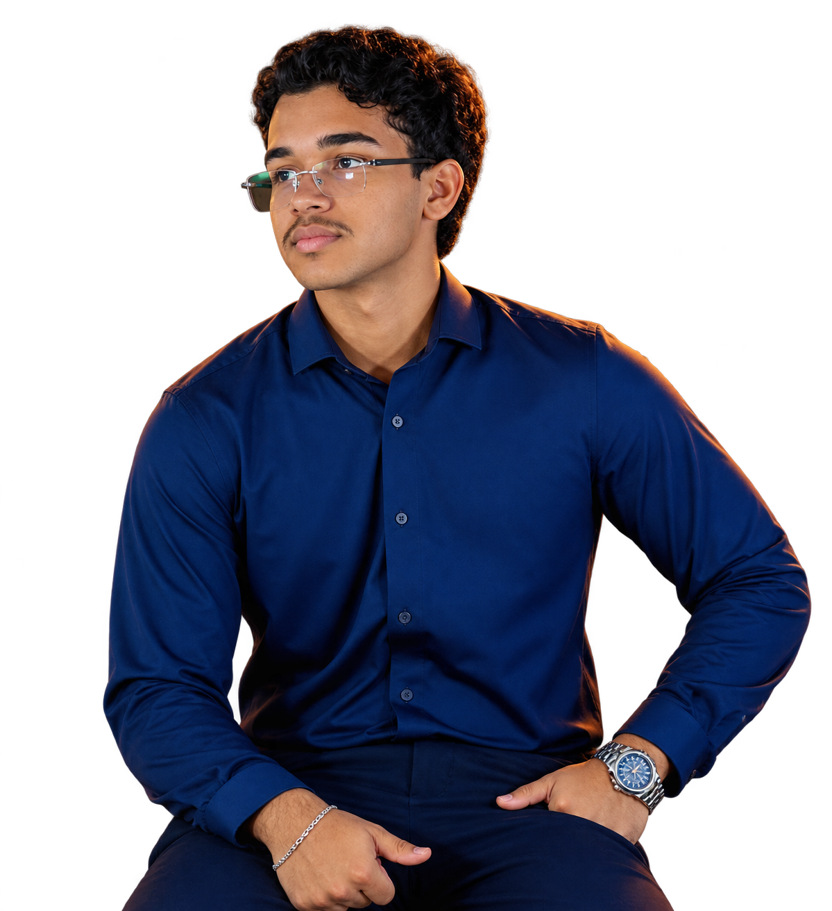

Sistemas de Informação
UNEX
DESENVOLVIMENTO WEB
Código com estrutura.
Interfaces com personalidade.

Sou Inacyo Guimarães. Curso Sistemas de Informação na UNEX e tenho foco em desenvolvimento web e software.
Gosto de criar interfaces com identidade, entender como cada parte funciona e cuidar dos detalhes que tornam o uso mais simples.
Também estou aprofundando meus estudos em segurança cibernética.
Conheça minha formaçãoAbra uma área para conhecer melhor.
Sites profissionais e páginas responsivas para apresentar seu trabalho, negócio ou serviço. Estrutura clara, conteúdo organizado e atenção ao uso no celular.
HTML / CSS / JAVASCRIPTPáginas com um objetivo bem definido e interfaces construídas para funcionar em diferentes telas, com interações leves e navegação direta.
RESPONSIVIDADE / INTERAÇÃOOrganização de conteúdo, fluxos de navegação e protótipos no Figma para definir a interface antes de começar o desenvolvimento.
FIGMA / ESTRUTURA VISUALFuncionalidades definidas a partir de uma conversa sobre o que você precisa. O escopo é combinado antes da implementação.
ESCOPO / DESENVOLVIMENTODo primeiro acesso
ao que vem depois.
Antes do código, uma conversa sobre o problema.
Definir conteúdo, funcionalidades e direção.
Dar forma à interface e conectar as partes.
Testar em diferentes telas, corrigir e melhorar.
Publicar e deixar tudo organizado para uso.
Python / SQL / APIs / Cybersecurity
Conhecimentos que estou desenvolvendo.UNEX
Santander Open Academy
Itaú + DIO